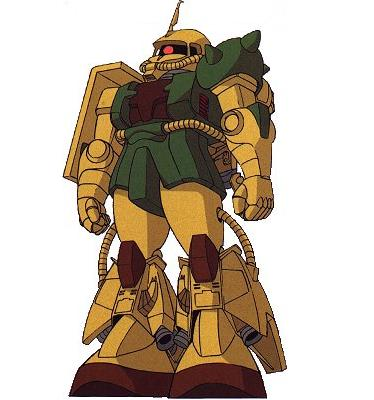

| MS-06R1A Zaku II High Mobility Type High Performance Space Combat Zeon Duchy Mobile Suit |
|
|  | |
General and Technical Data |
|
|
Model number: MS-06R-1A Code name: Zaku II High Mobility Type Unit type: mass production space combat mobile suit Manufacturer: Zeonic Company Operator: Zeon Duchy First deployment: UC 0079 Accommodation: pilot only, in standard cockpit in torso Dimensions: overall height 17.5 meters Weight: empty 61.8 metric tons; max gross 76.8 metric tons Construction: High Tensile Steel Powerplant: Minovsky type ultracompact fusion reactor, output rated at 1012 kW Propulsion: rocket thrusters: 52000 kg total Performance: maximum thruster acceleration 0.68 G Equipment and design features: sensors, range 3200 meters Fixed armaments: none Optional hand armaments: 120mm machine gun, drum-fed, 100 rounds per drum; 280mm Zaku bazooka; heat hawk, battery powered; 2x Panzer faust Magnetic Storage Racks: 5, primary rack on backpack, one secondary rack on either hip. 2 ammunition racks on front hips. Legs can additionally mount 3-tube missile launchers or panzer fausts. |
|
| Technical and Historical Notes | |
|
During the interim months between the end of Operation British and the deployment of Federal mobile suits, Zeon engineers continued tinkering away with their venerable MS-06 series of Zaku II mobile suits. While terrestrial designers were hard at work preparing their MS-09 Dom series (and stopgap MS-07 Gouf), the research crew at Solomon came up with a new and improved Zaku design until something better came their way. This new Zaku sports massively improved thruster output and maneuverability, among other things.
Though it still uses the same basic frame as the MS-06F, the MS-06R1A sports a vastly improved reactor, a lighter weight and greatly increased rocket output. It is also much more standardly armed with Panzer fausts, a favorite weapon of Dozles crew.
This high-performance variant is quite expensive to produce, and is usually only issued to seasoned officers. This is also for health concerns, as the Zaku HMT's expanded output is sometimes greater than green pilots can bear. This was the favored space unit of the infamous Black Tri-Stars, an upgrade from their earlier Zaku I B models.
|
 RPG quick stats sheet
RPG quick stats sheet | Weapons and Features | |
|

Zaku II Cockpit |
|